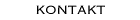

Referenser
Relaterade webbsidor om Brandväggar, Linux, netfilter, ipchains och ipfwadm.
Linux Firewall FAQ
Linux-dokumentation
Netfilter/iptables
Ipchains
Ipfwadm
Närmare beskrivning av ipfwadm med exempel
ENskip
Freefire (länkar)
CIPE
IPsec
L7-filter
Snort
Argus
Alternativ PC watchdog drivrutin
MRTG trafikövervakning via SNMP
Portnummer och tjänster
Föredrag o.d.
Beskrivning av Bifrost
(SUSEC-föredrag)
Artikel i nyhetsblad för UU om projektet
Föredrag om Netlab på UU (PDF)
Föredrag om Netlab på UU (PS)
Linux NAPI utvecklings-info (Readme)
Linux NAPI utvecklings-info
Föredrag om Linux Fast Forwarding på NordUSENIX (PDF)
Tom Johans
<Tom.Johans@_NO_SPAM_data.slu.se>
Last modified: Fri Apr 2 09:23:19 2004